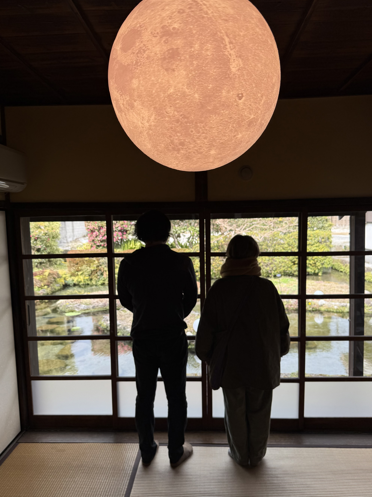

2006年、大阪出身のwandaと東京出身のyojikが東京で出会って結成。 現在は大阪と東京の遠距離ユニット。
2010年宅録作品1stアルバム「DREAMLAMD」発表。
2012年3月、2ndアルバム「Hey! Sa!」リリース。ゲストのバンドメンバーを迎えて制作。
2015年９月、3rdアルバム「フィロカリア」をcompare notesからリリース。前作とほぼ同じ録音メンバーで制作。
2017年７月、ミニアルバム「Summer Gift」を自主レーベルhedgehog recordsからリリース。2019年3月、４thアルバム「ナイトレイン」リリース。コロナ禍における2020年6月から「yojik and wanda`s New Recordings」シリーズを毎月一回ペースでBandcampにて配信リリース。
2023年11月公開のドキュメンタリー映画「映画の朝ごはん」の主題歌と劇伴を担当。
2025年４月、５thアルバム「シーセイ」リリース。